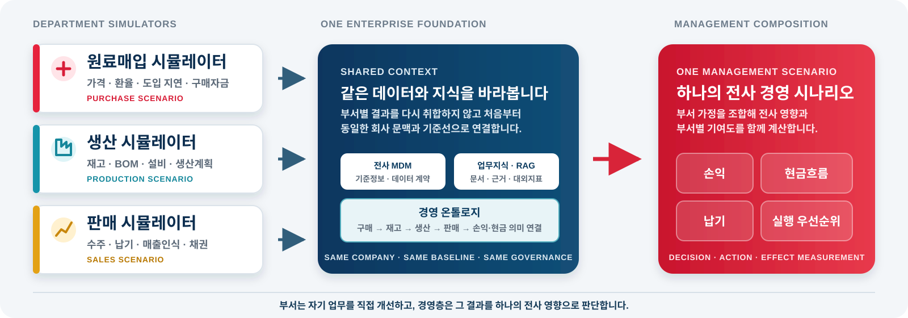

NAME AND PHILOSOPHYLAXS의 의미와 설계 철학
LAXS-M ADOPTION PROPOSAL
현업의 실행과
경영의 판단을 연결하는
AX 경영 플랫폼
LAXS-M은 현업이 업무 앱과 시뮬레이션을 직접 운영하고, 전사 데이터·지식·영향 경로를 공통 기반으로 연결해 경영 판단과 실행까지 이어주는 LS MnM의 AX 경영시스템입니다.

DOCUMENT MAP
목차
CORE PRODUCT CAPABILITIES핵심 기능과 사용자 가치
BUILD AND ORCHESTRATESW 생성과 에이전트 조율
SIMULATE AND CONNECT업무 시뮬레이션과 전사 연결
ENTERPRISE BUSINESS MODEL부서 시뮬레이션과 전사 통합 모델
THREE PRODUCT PLANES앱·의미지도·디지털트윈
WORK KITS AND AGENT TEMPLATES업무키트와 에이전트 실행 자산
KEY CHARACTERISTICS신뢰 가능한 AX 제품 원칙
ADOPTION EXECUTION MODEL현장 적용과 운영 전환 방식
EXPECTED EFFECTS판단·재작업·재사용·성과 개선
TCO AND ROI총비용과 투자효과 측정
EXPANSION PATH현장 적용에서 그룹 확산까지
ADOPTION CONCLUSIONLAXS-M 도입 제안 결론
CORPORATE VENTURE RATIONALE그룹 확산과 사업화를 위한 독립 조직
LEGACY DATA INTEGRATION기존 업무 시스템과의 데이터 연계
01. NAME AND PHILOSOPHYLAXS의 의미와 설계 철학
LS 안에 AX를 심고, 현업과 경영을 하나의 흐름으로 연결합니다.
LAXS = AX embedded in LSLS의 일과 경영에 AX를 내재화합니다.
LAXS - AX at the core of LS현업의 실행과 경영의 판단을 AX로 연결합니다.
LAXS - AX at the core of LS현업의 실행과 경영의 판단을 AX로 연결합니다.

업무 안의 AX
별도 AI 도구가 아니라 사용자의 실제 업무 흐름과 데이터 안에서 작동합니다.
전사의 AX
부서별 개선이 전사 공통 데이터와 경영 시나리오에 연결됩니다.
책임 있는 AX
권한·근거·계산·결정·실행 이력을 유지하며 회사가 통제합니다.
02. CORE PRODUCT CAPABILITIES핵심 기능과 사용자 가치
현업이 필요한 기능을 직접 만들고, 그 결과를 전사 데이터와 경영 의사결정으로 연결합니다.
SW 생성기
현업 사용자가 요구사항을 직접 입력하면 업무 앱의 계획·설계·구현·시험·릴리스 과정을 생성하고 관리합니다. 반복적인 개발 요청을 줄이고 업무 개선 속도를 높입니다.
업무별 시뮬레이터 생성
구매·생산·판매 등 업무별 데이터와 규칙을 적용한 시뮬레이션 에이전트와 계산 흐름을 구성합니다. 현업이 자기 업무의 가정과 대안을 직접 검토할 수 있습니다.
업무 에이전트 생성·조합
필요한 업무를 설명하면 AI가 역할별 에이전트를 추천·생성하고 실행 순서와 사람 확인 지점을 연결합니다. 원가분석·경쟁사 분석·보고서 작성·SW 생성 등에 활용합니다.
업무키트
업무별 데이터 항목·규칙·관리 화면·에이전트·시뮬레이션 모델을 재사용 가능한 자산으로 제공합니다. 현업은 처음부터 설계하지 않고 표준 업무 구조에서 빠르게 시작합니다.
전사 MDM·RAG·경영 온톨로지
부서 앱과 시뮬레이션 결과를 전사 기준정보에 통합하고 문서·외부지표·업무 관계를 의미로 연결합니다. 서로 다른 데이터가 같은 경영 질문에 답할 수 있게 합니다.
전사 시뮬레이션·의사결정·보고
부서별 결과를 생산·재고·매출·손익·현금 영향으로 조합하고 안건·실행계획·브리핑·보고서로 전환합니다. 분석에서 실행과 효과 측정까지 이어집니다.
사용자에게 보이는 장점현업은 필요한 기능과 시뮬레이션을 직접 만들고, 경영층은 부서별 결과가 전사 실적에 미치는 영향을 같은 데이터와 기준선으로 확인합니다.
03. BUILD AND ORCHESTRATESW 생성과 에이전트 조율
현업의 요구를 실행 가능한 업무 앱과 역할별 AI 에이전트 팀으로 전환합니다.


요구사항에서 업무 앱까지
현업이 기능·규칙·데이터·제약을 설명하면 계획과 구현 단계를 만들고 품질 게이트를 거쳐 운영 앱으로 전환합니다.
업무에 맞는 역할 추천
원가·경쟁사·생산계획·보고서 등 목적에 필요한 전문 에이전트를 추천하고 중복 역할을 줄입니다.
에이전트 연결과 사람 확인
여러 에이전트의 실행 순서·병렬 작업·재작업 경로를 연결하고 고위험 지점에는 사람 확인을 배치합니다.
장점IT 개발 요청을 기다리는 업무와 AI를 단순 질의하는 업무를 넘어, 현업이 실제로 사용할 기능과 실행팀을 직접 설계·개선할 수 있습니다.
04. SIMULATE AND CONNECT업무 시뮬레이션과 전사 연결
업무별 시뮬레이션 결과를 전사 데이터·경영 온톨로지와 연결해 손익·현금·납기 영향을 계산합니다.


부서별 업무 가정 검토
구매·생산·판매 부서가 자기 데이터와 계산 규칙으로 가격·지연·재고·납기 시나리오를 직접 실행합니다.
같은 데이터와 의미로 연결
부서 결과를 전사 MDM에 통합하고 문서·외부지표·업무 관계를 경영 온톨로지와 RAG 근거로 연결합니다.
전사 판단과 실행으로 전환
부서별 기여도와 전사 손익·현금 영향을 계산해 의사결정 안건·실행계획·브리핑·발간 보고서로 전환합니다.
장점부서별로 따로 만든 분석을 다시 취합하는 대신, 처음부터 같은 기준선과 데이터 관계를 사용해 전사 경영 시나리오를 재현합니다.
05. ENTERPRISE BUSINESS MODEL부서 시뮬레이션과 전사 통합 모델
부서별 업무 시뮬레이션이 같은 전사 데이터와 지식을 바라보고, 하나의 경영 시나리오로 결합됩니다.

부서가 직접 개선
각 업무파트가 자신에게 필요한 앱·에이전트·시뮬레이션을 직접 구성하고 운영합니다.
데이터와 의미는 공유
개별 앱의 결과는 같은 회사·조직·기준선·데이터 계약 아래 전사 자산으로 축적됩니다.
경영층에서 통합
부서별 결과를 조합해 전사 실적·손익·현금과 영향 경로를 확인하고 대안을 판단합니다.
06. THREE PRODUCT PLANES앱·의미지도·디지털트윈
하나의 회사 문맥 위에서 현업 앱 공장, 경영 의미지도와 디지털트윈이 함께 작동합니다.
Operational App Factory
현업 요구를 업무 앱, 에이전트 팀, 데이터 입력과 실행 흐름으로 전환합니다.
- 업무키트와 앱 템플릿
- 에이전트 추천·자동 생성
- 프로젝트·운영·릴리스 관리
Management Meaning Map
회사·조직·업무·데이터·지식·대외지표를 경영 의미와 영향 관계로 연결합니다.
- MDM·데이터 카탈로그
- RAG·지식팩·대외 인텔리전스
- 업무 온톨로지·근거 경로
Management Digital Twin
실적·계획·예측·시나리오를 구분하고 전사 손익·현금·실행 영향을 비교합니다.
- 부서별 업무 시뮬레이션
- 전사 통합 조합과 기여도
- 안건·실행·효과 측정
Trust Foundation
회사·조직 권한, 데이터 판과 지문, 확정된 산식, 실행 이력, 비용·보안·발간 통제가 세 제품면 아래에서 공통으로 작동합니다.
07. WORK KITS AND AGENT TEMPLATES업무키트와 에이전트 실행 자산
현업이 더 쉽게 데이터를 입력·관리하고 시뮬레이션을 운영하도록 돕는 업무키트를 제공합니다.
업무키트는 회사의 업무영역별로 데이터 계약·입력 항목·업무 규칙·에이전트 구성·계산 모델·관리 화면을 축적하고 재사용하는 실행 자산입니다.
입력·기준정보
업무에 필요한 필드, 코드, 단위, 데이터 계약과 품질 규칙을 제공합니다.
업무 흐름
역할·상태·검토·확정·예외 처리와 관리 화면을 업무 기준으로 구성합니다.
에이전트 구성
업무 목적에 맞는 역할별 에이전트와 워크플로우 템플릿을 추천합니다.
시뮬레이션 모델
업무 가정과 계산 결과가 전사 경영 모델에 연결되도록 입출력을 표준화합니다.
| 적용 업무 예시 | 현업이 관리하는 데이터·질문 | 전사 경영모델과의 연결 |
|---|---|---|
| 원료 구매·도입 | 계약·가격·환율·선적·도착·구매자금 | 매입원가·재고 가용성·운전자금 |
| 생산·재고 | BOM·수율·설비·생산계획·품질·재고 | 생산 가능량·제품원가·납기 |
| 판매·수주 | 주문·납기·출하·가격·채권·매출인식 | 매출·기여이익·현금 회수 |
| 재무·투자·인사 등 | 향후 업무영역별 데이터와 의사결정 모델을 동일 구조로 확장 | 전사 자원배분·손익·현금·조직 영향 |
08. KEY CHARACTERISTICS신뢰 가능한 AX 제품 원칙
LAXS-M은 빠른 생성보다 다시 설명할 수 있고 책임 있게 운영되는 결과를 만듭니다.
회사 문맥과 권한 상속
생성 앱과 에이전트는 별도 사용자·DB 체계를 만들지 않고 상위 회사·조직·권한·데이터 계약을 상속합니다.
근거가 먼저 보이는 AI
결론보다 출처·기준시점·데이터 판·관계 경로·계산과 가정을 함께 제시합니다.
확정된 숫자
LLM은 질문과 결과를 설명하고, 경영 수치는 검증된 데이터와 계산 엔진이 산출합니다.
회사·조직 기준 통합
법인·사업부·부서·공장·가상회사를 하나의 문맥 체계에서 분리하고 연결합니다.
비용을 고려한 실행
업무 난이도와 위험에 따라 모델·도구·검토 강도를 조정하고 캐시·재사용을 우선합니다.
효과까지 추적
분석 결과를 안건·실행계획·실적과 연결해 실제 변화와 다음 개선을 확인합니다.
09. ADOPTION EXECUTION MODEL전사 TFT에서 사내벤처·그룹 확산까지
전사 TFT로 현장 적용을 시작하고, 별도 AX 제품조직이 운영과 그룹 확산을 책임집니다.
0~2개월 · 전사 AX TFT 구성
CEO Sponsor 아래 구매·생산·판매·재무·IT·보안·데이터 오너를 묶고 전사 시나리오, 기준선, 데이터 책임과 예산을 확정합니다.
3~6개월 · 최대 10명 전사 적용
실제 업무 리듬에서 시나리오·안건·실행·효과 측정을 운영하고 읽기 연계, 업무키트, 권한과 교육을 검증합니다.
6~12개월 · AX 제품조직/사내벤처 전환
평시 30명·최대 50명 운영을 지원하며 제품 로드맵, 릴리스, 데이터 계약, LLM 비용, SLA와 지원체계를 독립 운영합니다.
12개월 이후 · 그룹 내 계열사 확산
공통 코어와 업무키트를 재사용하고 계열사별 데이터 격리·업무 특화·정산·지원 모델을 적용합니다.
왜 전사 IT기획·PI 부서의 부가업무로 두지 않는가
- IT기획·PI는 전사 아키텍처·표준·투자·프로젝트 통제를 맡아야 하므로, 일일 제품 백로그와 사용자 운영까지 함께 맡기면 본래 역할과 제품 우선순위가 충돌합니다.
- 데이터 계약·모델 품질·LLM 비용·릴리스·장애·사용자 지원은 구축사업이 끝난 뒤에도 계속되는 상시 제품 책임입니다.
- 그룹 확산과 대외 사업화에는 공통 IP·제품 로드맵·고객지원·내부 정산·전문인력 보상을 전담할 독립 책임 주체가 필요합니다.
별도 조직이 현업 책임을 가져가지는 않습니다
현업·데이터 오너는 업무 기준·데이터·산식·결정 책임을 유지합니다.IT·보안은 인프라·접근·감사 통제를 맡습니다.AX 제품조직/사내벤처는 공통 플랫폼, 연계 표준, 릴리스, 운영지원과 계열사 재사용을 전담합니다.
BACKUP 01 · CORPORATE VENTURE RATIONALE
12 / 17WHY AN INDEPENDENT AX VENTURE그룹 확산과 대외 사업화를 위한 독립 조직
사내벤처 방식의 독립 제품조직이어야 MnM의 성과를 그룹 표준과 대외 사업으로 확장할 수 있습니다.
왜 독립 조직이어야 하는가
- 부서 KPI와 단년도 예산을 넘어 그룹 공통 로드맵과 우선순위를 운영해야 합니다.
- 제품 코어·품질·권한·IP·릴리스·지원의 단일 책임 주체가 필요합니다.
- 대외 고객·가격·계약·파트너·손익을 다루려면 별도 사업계획과 P&L이 필요합니다.
현업·IT·ITO와의 역할 분담
- MnM 현업은 업무·데이터·산식·의사결정의 정본을 책임집니다.
- IT·보안은 인프라·접근통제·감사·백업·복구 기준을 책임집니다.
- 그룹 ITO는 확산 단계의 구축·인프라·운영 파트너이며, 사내벤처는 제품·로드맵·사업을 책임집니다.
LS MnM의 전략적 이익MnM은 단순 도입사가 아니라 최초 적용사이자 공동 제품 오너가 됩니다. 우선사용권·맞춤 고도화·재사용에 따른 비용 절감과 함께, 향후 그룹·대외 사업화에서 IP 가치와 사업수익에 참여할 신사업 선택권을 확보할 수 있습니다.
10. EXPECTED EFFECTS판단·재작업·재사용·성과 개선
도입 효과는 AI 사용량이 아니라 판단속도·업무 재작업·자산 재사용·실행성과로 측정합니다.
현업 사용자의 변화
- 필요한 기능과 시뮬레이션을 업무 언어로 만들고 개선
- 같은 자료를 반복 가공하는 시간을 줄이고 판단에 집중
- 업무지식과 개선 경험이 개인 파일이 아닌 회사 자산으로 축적
경영진의 변화
- 부서별 가정과 결과를 같은 기준선에서 비교
- 전사 손익·현금·납기 영향과 부서별 기여도를 함께 확인
- 결정의 근거·실행·성과를 연결해 다음 판단의 품질을 향상
효과 측정 원칙도입 전 기준선과 도입 후 실측을 같은 업무·기간·표본으로 비교하고, 데이터 준비·AI·인프라·운영 비용을 함께 평가합니다.
11. TCO AND ROI예상 투자비와 효과 검증 방식
최소화된 초기 투자비와 운영비로 실제 ROI 산출이 가능합니다.
ESSENTIAL ADOPTION CAPEX0.4~0.8억 원ERP·MES·LPL·Legacy 원천 3~5개 읽기 연계 중심의 예비범위
ANNUAL CORE OPEX0.24~0.66억 원 + α클라우드·DB·스토리지·백업 비용과 LLM·API·관측 비용의 합계
CAPEX · 초기 투자 필요항목
제품 기획·핵심기능 개발추가비 최소작성자이자 시스템 기획·개발자가 이미 구현한 소스와 고도화 로드맵 활용
제품 고도화·업무키트 설계내부 추진수립된 고도화 계획과 공통 코어를 기준으로 범위별 순차 적용
EAI·API·MCP 연계 3~5개0.4~0.8억읽기 우선, 원천별 난이도·문서화 수준·보안심사에 따라 변동
보안·인프라 추가 요건범위별 산정회사 표준 SSO·DB·백업·복구 자산 재사용 여부 확정 후 별도 산정
OPEX · 연간 운영 예비범위
클라우드·DB·스토리지·백업0.12~0.30억국내 클라우드 기준, 가용성·보존기간에 따라 변동
LLM·API·관측·비용통제0.12~0.36억모델·토큰·캐시·사용자 수에 월별 예산상한 적용
제품운영·보안·사용자 지원＊0.60~1.00억운영조직 구성과 서비스 수준에 따라 변동
업무키트·연계 지속 개선＊0.24~0.48억업무 변경, 원천 버전, 데이터 품질 보정
24-MONTH ROI & PAYBACKROI = (누적 검증효과 − 누적 TCO) ÷ 누적 TCO
현재 구현 수준과 고도화 계획을 활용할 경우 24개월 손익분기 기준은 약 2.6~5.0억 원입니다. 효과는 절감 인시×완전원가, 외주개발 회피, 운전자금×자본비용, 실제 손익·납기 개선만 반영합니다.
＊ 제품운영·보안·사용자 지원과 업무키트·연계 지속 개선 비용은 운영조직과 적용 범위에 따라 별도 산정합니다. OPEX는 사용자 수·서비스 수준·모델 사용량 확정 후 상세 재산정이 필요합니다.
BACKUP 02 · LEGACY DATA INTEGRATION
15 / 17EXISTING SYSTEM DATA INTEGRATION기존 업무 시스템과의 데이터 연계 방안
기존 업무 시스템과의 데이터 연계 방안
ERP·MES·LPL을 교체하지 않고, 읽기 우선 연계에서 검증된 영역만 EAI·CDC와 제한적 쓰기로 확장합니다.
ERP · MES · LPL · ETC Legacy
거래·회계·생산·설비·물류·통관의 공식 원천과 기존 사용자 화면을 유지합니다.
EAI / CDC · API · MCP Server · DB View / File
서버측 권한, 데이터 계약, 코드 매핑, 캐시, 재처리, 감사로그를 적용하는 연계 게이트웨이입니다. MCP는 도구 접근 방식이며 MDM·권한을 대체하지 않습니다.
MDM · RAG · 온톨로지 · 시뮬레이션
원천을 복제해 새 ERP를 만들지 않고, 경영 의미·영향·가정·결정·효과를 연결합니다.
| 예상 문제 | 관리 포인트 | 해결 방안 |
|---|---|---|
| 코드·단위·조직 의미 불일치 | 원천별 정본, Crosswalk, 유효기간 | 전사 MDM·데이터 계약·온톨로지로 변환 근거와 책임자 관리 |
| 지연·중복·누락·원천 부하 | as-of, watermark, 재처리, 호출한도 | CDC/증분 수집, 캐시, 대사 리포트, 원천별 SLA와 실패 큐 적용 |
| MCP/API 권한·정보 노출 | 사용자 범위, 비밀키, 허용 도구·필드 | 서버측 PDP, 최소권한, Vault, 마스킹, 호출·응답 감사로그 적용 |
| 쓰기 충돌·부분 성공 | 승인, 멱등성, 보상·재조정 | 초기 읽기 전용, 쓰기는 승인된 업무만 Outbox/Saga와 원장으로 통제 |
| 원천·인터페이스 버전 변경 | 스키마·계약 버전, 운영 담당, 유지비 | 계약시험·버전 고정·변경 통보·연간 구축비의 15~25% 유지보수 예산 |
연계비는 예비 기획범위이며 원천 접근권한·문서화 수준·실시간성·쓰기 여부에 따라 달라집니다. 외부 협업 주체는 기존 시스템을 계속 사용하고 LAXS-M은 확정된 데이터만 경영 문맥에 연결합니다.
12. EXPANSION PATH현장 적용에서 그룹 확산까지
MnM의 현장 적용에서 시작해 전사 운영과 그룹 AX 플랫폼으로 확장합니다.
최대 10명 현장 적용
핵심 업무 시나리오를 실제 사용자·데이터·경영 리듬에서 운영합니다.
평시 30명·최대 50명
업무영역·사용자를 확대하고 PostgreSQL·SLA·복구·운영통제를 강화합니다.
그룹 내 계열사 확산 적용
공통 코어와 업무키트를 재사용하고 계열사별 데이터 격리와 업무 특화를 검증합니다.
그룹 LAXS 플랫폼
계열사별 경영모델을 연결하고 공통 기준·제품·운영·정산 체계를 확장합니다.
확장의 원칙현장 가치와 반복 적용성을 확인하면서 공통 코어·업무키트·운영모델을 단계적으로 확장합니다.
13. ADOPTION CONCLUSIONLAXS-M 도입 제안 결론
현업이 만들고,
전사가 연결하며,
경영이 판단하는
LAXS-M
LS MnM의 실제 업무와 데이터 위에서 AX를 운영하고, 전사 경영 시뮬레이션과 실행 효과를 회사 자산으로 축적합니다.
LAXS의 사상
AX를 LS의 일과 경영 안에 내재화합니다.
LAXS-M의 기획
업무 앱 공장·경영 의미지도·디지털트윈을 하나로 운영합니다.
예상 효과
판단속도·재작업·자산 재사용·실행성과를 개선합니다.
향후 확장
MnM의 전사 운영에서 그룹 내 계열사와 그룹 플랫폼으로 확장합니다.